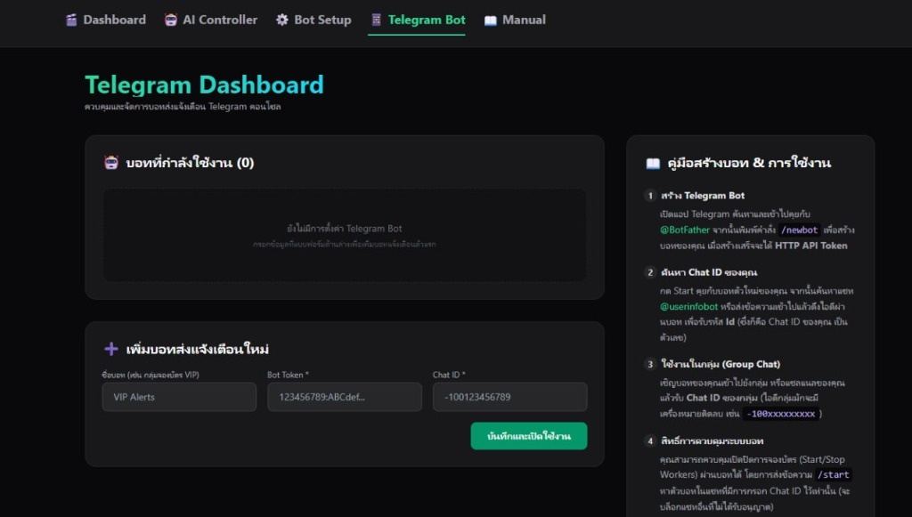
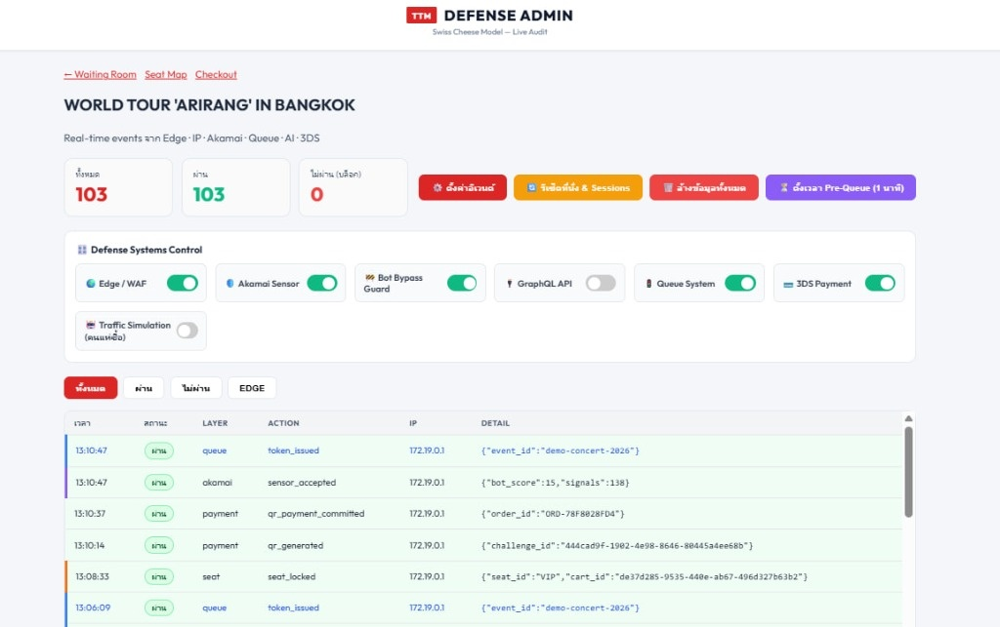
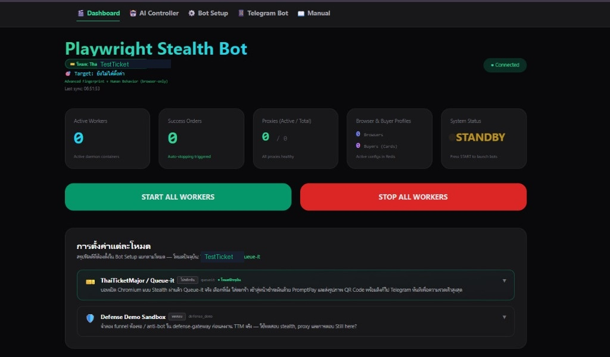

ระบบบริหารจัดการและส่วนควบคุม (Manager & Dashboards)
ส่วนกระจายคำสั่งกลาง (Orchestration Engine), การควบคุมผ่าน Telegram Bot และหน้าจอ Admin Live Audit
โครงสร้างส่วนบริหารจัดการกลาง (Manager Microservice - /manager)
main.py (Central Orchestration)
ให้บริการ REST API และ WebSocket สำหรับคอยรับสถานะ Heartbeat จาก Workers ทั่วทั้งระบบ ควบคุมรอบภารกิจการยิงเปิดแมตช์ตั๋ว และรวบรวมตัวเลข Telemetry ส่งต่อไปยัง AI Fraud Engine
telegram_bot.py (Remote Operator Interface)
อินเทอร์เฟซควบคุมระบบทางไกลผ่าน Telegram Application ช่วยให้ผู้บริหารระบบหรือ Security Operator สามารถสั่งรัน หยุด หรือตรวจสอบสถานะผ่านคำสั่งแชทได้ทันที
คำสั่งควบคุมระบบผ่าน Telegram Bot (Bot Command Suite)
| Telegram Command | Target Action | Response Description |
|---|---|---|
/status |
System Health Check | รายงานจำนวน Workers ที่ Active, อัตรา Success/Failure, สถานะ Redis และ Queue throughput |
/start_wave <event_id> |
Trigger Attack Wave | กระจายสัญญาณไปยัง Workers ทั้งหมดให้เริ่มยิง Concurrent Purchase Wave ไปยัง Event ที่กำหนด |
/stop_all |
Emergency Stop | ส่งคำสั่งหยุดภารกิจฉุกเฉินไปยัง Workers ทั้งหมดทันที |
/proxies |
Proxy Pool Status | แสดงจำนวน IP Proxy ที่ใช้งานได้ และอัตรา Latency เฉลี่ย |
หน้าต่างอินเทอร์เฟซ Telegram Dashboard จริง

Telegram Dashboard UI
ส่วนควบคุมและจัดการบอทแจ้งเตือน Telegram คอนโซล พร้อมคู่มือการสร้างและผูกกลุ่มแจ้งเตือน
แดชบอร์ดติดตามสถานะและตรวจสอบความปลอดภัย (Dashboards)
1. Operational Dashboard (http://localhost:5173)
หน้าจอหลักสำหรับฝั่งการทำงาน พัฒนาด้วย React + TypeScript แสดงผลสถานะการทำงานของ Workers แบบ Real-time, อัตราความสำเร็จในการล็อกที่นั่ง, ตำแหน่งคิวเฉลี่ย และการควบคุม Event Target
2. Live Defense Audit Feed (http://localhost:8090/admin)
หน้าจอสำหรับฝั่ง Blue Team แสดงผลสตรีมเหตุการณ์การตรวจจับของชั้นความปลอดภัยสด แยกสีตามชั้นการป้องกัน (IP Burst Block / Akamai Challenge / AI Fraud Block / 3DS Fail)
ภาพถ่ายหน้าจอส่วนควบคุมจริง (Defense Admin & Stealth Bot)

TTM Defense Admin (Live Audit)
หน้าจอบริหารจัดการสวิตช์ระบบความปลอดภัยและสตรีมบันทึกการผ่าน/ไม่ผ่านสด

Playwright Stealth Bot Controller
หน้าจอควบคุมบอทฝั่ง Offense สลับโหมด สั่งรัน/หยุด Workers